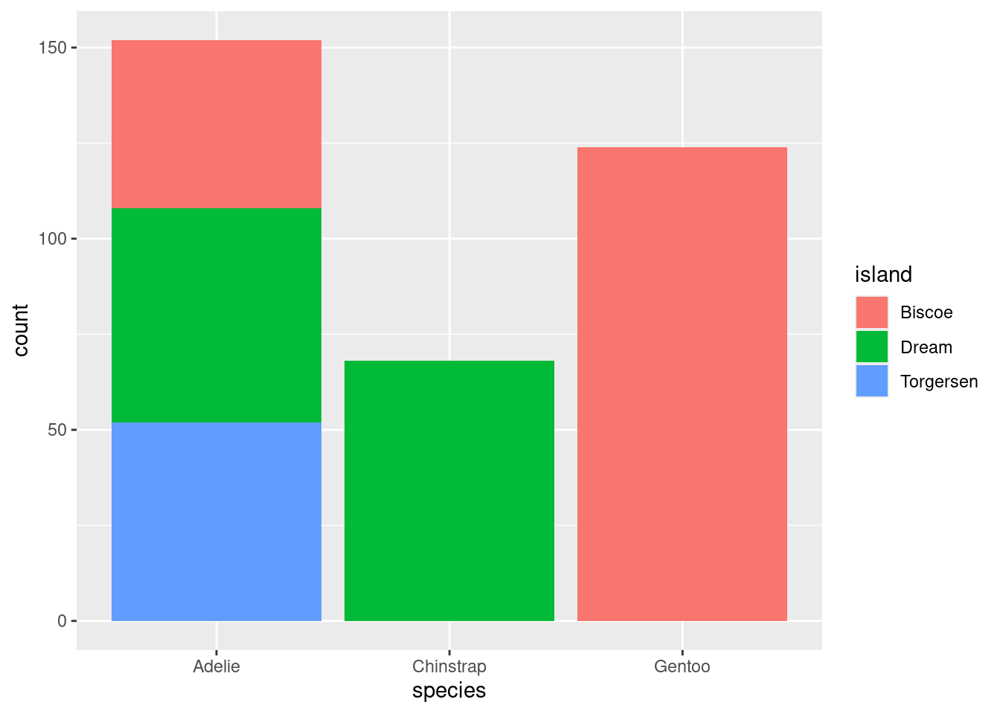
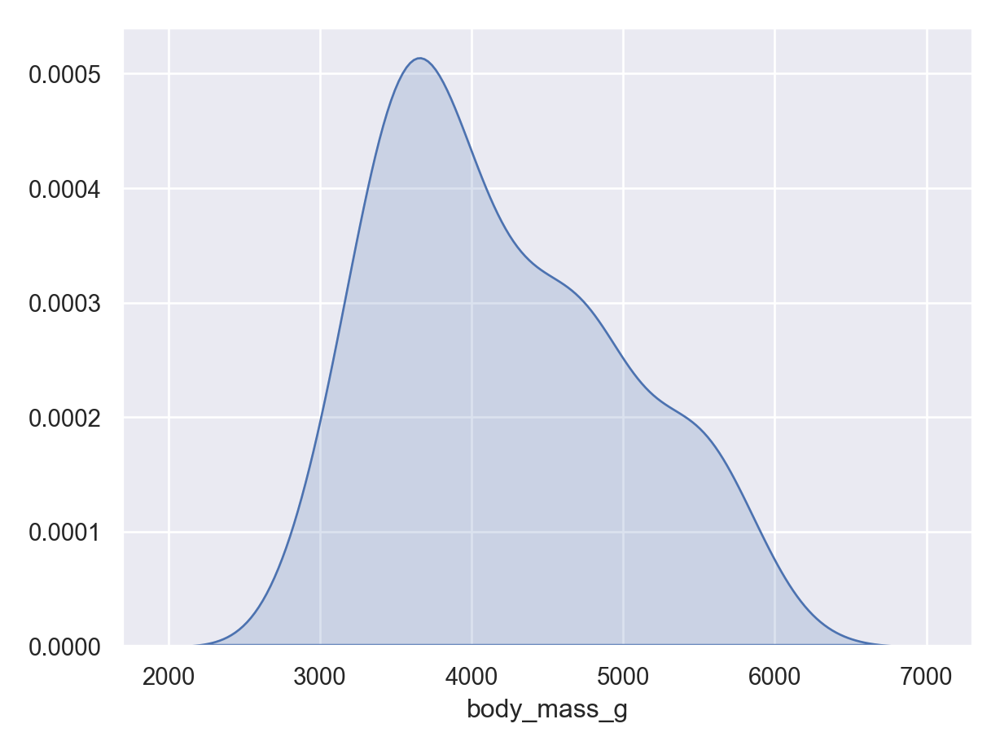
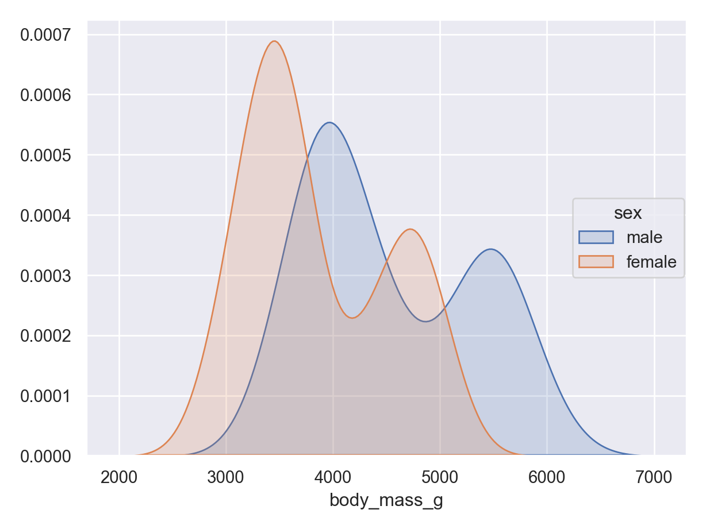
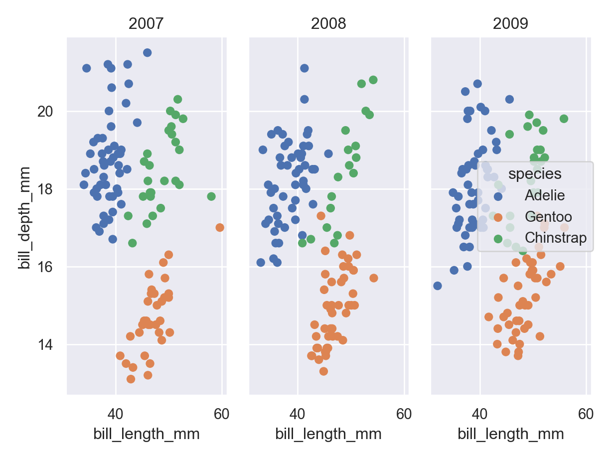

You have a new dataset and it’s time to dig in. You may have some information about how the data was collected (or not!), but you almost certainly don’t already know what’s in the data - what artifacts, data entry errors, missing data, and outliers may show up. Exploratory Data Analysis, or EDA, is like an exploratory hike through unknown territory. You may have prepared ahead of time - you may have a map, hiking boots, and so on, but you cannot predict what wildlife you will see or what obstacles you might encounter.
Examining the Data Structure
Roger Peng’s e-book “Exploratory Data Analysis with R” contains a checklist for EDA that is a useful starting point.
This checklist covers mostly numerical summaries, but these numerical summaries can be incredibly useful for getting familiar with the data before proceeding with a graphical exploration.
Formulate your question - come up with at least one question to guide your analysis. This prevents you from trying to explore too many paths at once. (You don’t necessarily need to stick to this path if you find another interesting one, though.)
Read in your data
Check the packaging - look at the number of rows and columns and ensure they match your expectations.
Examine the structure of your data (e.g. using str() in R or DataFrame.info() in pandas)
Look at the top and the bottom of your data using functions like head() and tail()
Check your “n”s - examine counts of data by relevant variables, like location, participant, time to ensure the data matches your expectations.
Validate with at least one external data source - check that the observations in your data fall within an acceptable range defined by some outside data source.
Try the easy solution first - get a simple answer to your question with a quick plot or table
Challenge your solution - spend a bit more time answering your question by e.g. summarizing your data across a relevant dimension or examining the effect of important covariates.
Follow up - do you have the right data to answer your question? Do you need additional data? Do you need to adjust your question?
Graphical EDA
When examining a data set, it is often useful to start out by examining single variables. We often care about distributions of data, both for getting to know the dataset and for considering modeling possibilities once we transition to confirmatory data analysis.
Throughout this section, we’ll use the palmerpenguins data.
Histograms (numerical data) - show full distribution of the data, useful for assessing skewness, etc.
Density plot (numerical data) - continuous version of histogram
Barplots (categorical data) - categorical equivalent of histogram.
It is often common to initially make these plots for one variable and then to begin to explore conditional distributions by drawing multiple plots for different values of a different variable.
The following examples show exploratory plots for the palmerpenguins data.
ggplot(penguins) +geom_bar(aes(x = species, fill = sex), position ="dodge")
ggplot(penguins) +geom_bar(aes(x = species, fill = island))

( so.Plot(penguins, x ="species") .add(so.Bar(), so.Count()) .show())
plt.close()( so.Plot(penguins, x ="species", color ="sex") .add(so.Bar(), so.Count(), so.Dodge()) .show())
plt.close()( so.Plot(penguins, x ="species", color ="island") .add(so.Bar(), so.Count(), so.Stack()) .show())
plt.close()
Two-dimensional summaries
Some of the one-dimensional summaries discussed above are easily modified into two dimensional summaries by coloring by or faceting by another variable. Other two-dimensional summaries require different types of plots: for instance, scatter plots, which show two numerical variables and can be modified to use color, shape, and facets to include even more information.
ggplot(penguins, aes(x = bill_length_mm, y = bill_depth_mm)) +geom_point()
Warning: Removed 2 rows containing missing values or values outside the scale range
(`geom_point()`).
ggplot(penguins, aes(x = bill_length_mm, y = bill_depth_mm, color = species)) +geom_point()
Warning: Removed 2 rows containing missing values or values outside the scale range
(`geom_point()`).
ggplot(penguins, aes(x = bill_length_mm, y = bill_depth_mm, color = species)) +geom_point() +facet_wrap(~year)
Warning: Removed 2 rows containing missing values or values outside the scale range
(`geom_point()`).
( so.Plot(penguins, x ="bill_length_mm", y ="bill_depth_mm") .add(so.Dot()) .show())

plt.close()( so.Plot(penguins, x ="bill_length_mm", y ="bill_depth_mm", color ="species") .add(so.Dot()) .show())

plt.close()( so.Plot(penguins, x ="bill_length_mm", y ="bill_depth_mm", color ="species") .facet("year") .add(so.Dot()) .show())

plt.close()
Scatter plot Matrices
Sometimes, we want to examine conditional relationships between many different variables at a time - for instance, to identify highly correlated variables when considering fitting a linear model. Scatter plot matrices allow us to examine relationships between many sets of two variables at once.